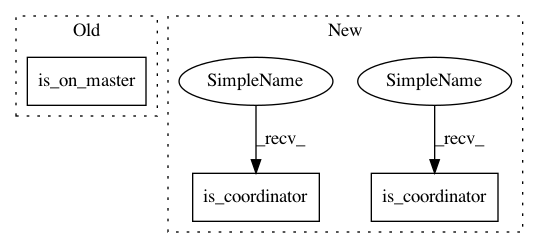

c92442390c9acf94f3a6bec887115b8a80005ba0,ludwig/models/trainer.py,Trainer,train,#Trainer#Any#Any#Any#Any#Any#,277
Before Change
// ================ Train ================
progress_bar = None
if is_on_master():
progress_bar = tqdm(
desc="Training",
total=batcher.steps_per_epoch,
After Change
// ====== Setup session =======
checkpoint = checkpoint_manager = None
if self.is_coordinator():
checkpoint = tf.train.Checkpoint(
optimizer=self.optimizer,
model=model
)
checkpoint_manager = tf.train.CheckpointManager(
checkpoint, training_checkpoints_path, max_to_keep=1
)
train_summary_writer = None
validation_summary_writer = None
test_summary_writer = None
if self.is_coordinator() and not self.skip_save_log and tensorboard_log_dir:
train_summary_writer = tf.summary.create_file_writer(
os.path.join(
tensorboard_log_dir, TRAINING
)
)
if validation_set is not None and validation_set.size > 0:
validation_summary_writer = tf.summary.create_file_writer(
os.path.join(
tensorboard_log_dir, VALIDATION
)
)
if test_set is not None and test_set.size > 0:
test_summary_writer = tf.summary.create_file_writer(
os.path.join(
tensorboard_log_dir, TEST
)
)
if self.debug and self.is_coordinator():
// See https://www.tensorflow.org/tensorboard/debugger_v2 for usage.
debug_path = os.path.join(
save_path, "debug"
)
tf.debugging.experimental.enable_dump_debug_info(
debug_path,
tensor_debug_mode="FULL_HEALTH",
circular_buffer_size=-1,
)
tf.config.experimental_run_functions_eagerly(True)
// ================ Resume logic ================
if self.resume:
progress_tracker = self.resume_training_progress_tracker(
training_progress_tracker_path
)
if self.is_coordinator():
self.resume_weights_and_optimzier(
training_checkpoints_path, checkpoint
)
else:
(
train_metrics,
vali_metrics,
test_metrics
) = self.initialize_training_metrics(output_features)
progress_tracker = ProgressTracker(
batch_size=self.batch_size,
epoch=0,
steps=0,
last_improvement_epoch=0,
last_learning_rate_reduction_epoch=0,
last_increase_batch_size_epoch=0,
learning_rate=self.learning_rate,
best_eval_metric=get_initial_validation_value(
self.validation_metric
),
best_reduce_learning_rate_eval_metric=get_initial_validation_value(
self.reduce_learning_rate_eval_metric
),
last_reduce_learning_rate_eval_metric_improvement=0,
best_increase_batch_size_eval_metric=get_initial_validation_value(
self.increase_batch_size_eval_metric
),
last_increase_batch_size_eval_metric_improvement=0,
num_reductions_learning_rate=0,
num_increases_batch_size=0,
train_metrics=train_metrics,
vali_metrics=vali_metrics,
test_metrics=test_metrics,
last_improvement=0,
last_learning_rate_reduction=0,
last_increase_batch_size=0,
)
set_random_seed(self.random_seed)
batcher = training_set.initialize_batcher(
batch_size=self.batch_size,
seed=self.random_seed,
horovod=self.horovod
)
// ================ Training Loop ================
first_batch = True
while progress_tracker.epoch < self.epochs:
batcher.set_epoch(progress_tracker.epoch)
// epoch init
start_time = time.time()
if self.is_coordinator():
logger.info(
"\nEpoch {epoch:{digits}d}".format(
epoch=progress_tracker.epoch + 1,
digits=digits_per_epochs
)
)
// needed because batch size may change
batcher.batch_size = progress_tracker.batch_size
// Reset the metrics at the start of the next epoch
model.reset_metrics()
// ================ Train ================
progress_bar = None
if self.is_coordinator():
progress_bar = tqdm(
desc="Training",
total=batcher.steps_per_epoch,
file=sys.stdout,
disable=is_progressbar_disabled()
)
// training step loop
while not batcher.last_batch():
// Set learning rate for this batch
current_learning_rate = progress_tracker.learning_rate
if self.decay:
current_learning_rate = exponential_decay(
current_learning_rate,
self.decay_rate,
self.decay_steps,
progress_tracker.steps,
self.staircase
)
if self.horovod:
current_learning_rate = learning_rate_warmup_distributed(
current_learning_rate,
progress_tracker.epoch,
self.learning_rate_warmup_epochs,
self.horovod.size(),
batcher.step,
batcher.steps_per_epoch
) * self.horovod.size()
else:
current_learning_rate = learning_rate_warmup(
current_learning_rate,
progress_tracker.epoch,
self.learning_rate_warmup_epochs,
batcher.step,
batcher.steps_per_epoch
)
self.optimizer.set_learning_rate(current_learning_rate)
// obtain batch
batch = batcher.next_batch()
inputs = {
i_feat.feature_name: batch[i_feat.proc_column]
for i_feat in model.input_features.values()
}
targets = {
o_feat.feature_name: batch[o_feat.proc_column]
for o_feat in model.output_features.values()
}
// Reintroduce for tensorboard graph
// if first_batch and self.is_coordinator() and not skip_save_log:
// tf.summary.trace_on(graph=True, profiler=True)
loss, all_losses = model.train_step(
self.optimizer,
inputs,
targets,
self.regularization_lambda
)
// Reintroduce for tensorboard graph
// if first_batch and self.is_coordinator() and not skip_save_log:
// with train_summary_writer.as_default():
// tf.summary.trace_export(
// name="Model",
// step=0,
// profiler_outdir=tensorboard_log_dir
// )
if self.is_coordinator() and not self.skip_save_log:
self.write_step_summary(
train_summary_writer=train_summary_writer,
combined_loss=loss,
all_losses=all_losses,
step=progress_tracker.steps,
learning_rate=current_learning_rate,
)
if self.horovod and first_batch:
// Horovod: broadcast initial variable states from rank 0 to all other processes.
// This is necessary to ensure consistent initialization of all workers when
// training is started with random weights or restored from a checkpoint.
//
// Note: broadcast should be done after the first gradient step to ensure
// optimizer initialization.
self.horovod.broadcast_variables(model.variables,
root_rank=0)
self.horovod.broadcast_variables(
self.optimizer.variables(), root_rank=0)
progress_tracker.steps += 1
if self.is_coordinator():
progress_bar.update(1)
first_batch = False
// ================ Post Training Epoch ================
if self.is_coordinator():
progress_bar.close()
progress_tracker.epoch += 1
// ================ Eval ================
// init tables
tables = OrderedDict()
for output_feature_name, output_feature in output_features.items():
tables[output_feature_name] = [
[output_feature_name] + metrics_names[output_feature_name]
]
tables[COMBINED] = [[COMBINED, LOSS]]
// eval metrics on train
self.evaluation(
model,
training_set,
"train",
progress_tracker.train_metrics,
tables,
self.eval_batch_size,
)
self.write_epoch_summary(
summary_writer=train_summary_writer,
metrics=progress_tracker.train_metrics,
step=progress_tracker.epoch,
)
if validation_set is not None and len(validation_set) > 0:
// eval metrics on validation set
self.evaluation(
model,
validation_set,
"vali",
progress_tracker.vali_metrics,
tables,
self.eval_batch_size,
)
self.write_epoch_summary(
summary_writer=validation_summary_writer,
metrics=progress_tracker.vali_metrics,
step=progress_tracker.epoch,
)
if test_set is not None and len(test_set) > 0:
// eval metrics on test set
self.evaluation(
model,
test_set,
TEST,
progress_tracker.test_metrics,
tables,
self.eval_batch_size,
)
self.write_epoch_summary(
summary_writer=test_summary_writer,
metrics=progress_tracker.test_metrics,
step=progress_tracker.epoch,
)
elapsed_time = (time.time() - start_time) * 1000.0
if self.is_coordinator():
logger.info("Took {time}".format(
time=time_utils.strdelta(elapsed_time)))
// metric prints
if self.is_coordinator():
for output_feature, table in tables.items():
logger.info(
tabulate(
In pattern: SUPERPATTERN
Frequency: 6
Non-data size: 3
Instances
Project Name: uber/ludwig
Commit Name: c92442390c9acf94f3a6bec887115b8a80005ba0
Time: 2021-01-31
Author: tgaddair@gmail.com
File Name: ludwig/models/trainer.py
Class Name: Trainer
Method Name: train
Project Name: uber/ludwig
Commit Name: c92442390c9acf94f3a6bec887115b8a80005ba0
Time: 2021-01-31
Author: tgaddair@gmail.com
File Name: ludwig/models/trainer.py
Class Name: Trainer
Method Name: check_progress_on_validation
Project Name: uber/ludwig
Commit Name: c92442390c9acf94f3a6bec887115b8a80005ba0
Time: 2021-01-31
Author: tgaddair@gmail.com
File Name: ludwig/models/predictor.py
Class Name: Predictor
Method Name: batch_predict
Project Name: uber/ludwig
Commit Name: c92442390c9acf94f3a6bec887115b8a80005ba0
Time: 2021-01-31
Author: tgaddair@gmail.com
File Name: ludwig/models/predictor.py
Class Name: Predictor
Method Name: batch_evaluation
Project Name: uber/ludwig
Commit Name: c92442390c9acf94f3a6bec887115b8a80005ba0
Time: 2021-01-31
Author: tgaddair@gmail.com
File Name: ludwig/models/trainer.py
Class Name: Trainer
Method Name: train
Project Name: uber/ludwig
Commit Name: c92442390c9acf94f3a6bec887115b8a80005ba0
Time: 2021-01-31
Author: tgaddair@gmail.com
File Name: ludwig/models/trainer.py
Class Name: Trainer
Method Name: increase_batch_size
Project Name: uber/ludwig
Commit Name: c92442390c9acf94f3a6bec887115b8a80005ba0
Time: 2021-01-31
Author: tgaddair@gmail.com
File Name: ludwig/models/trainer.py
Class Name: Trainer
Method Name: reduce_learning_rate